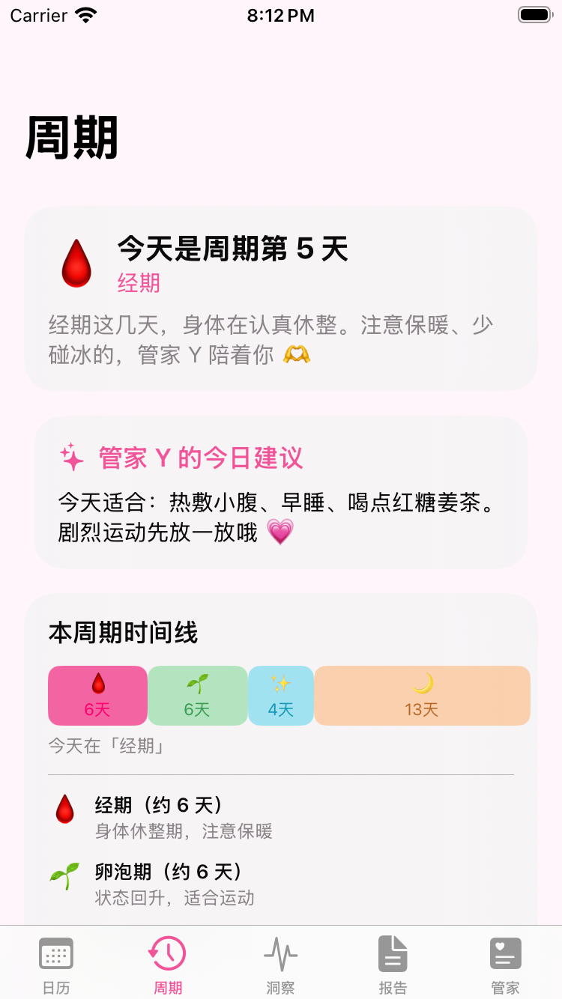
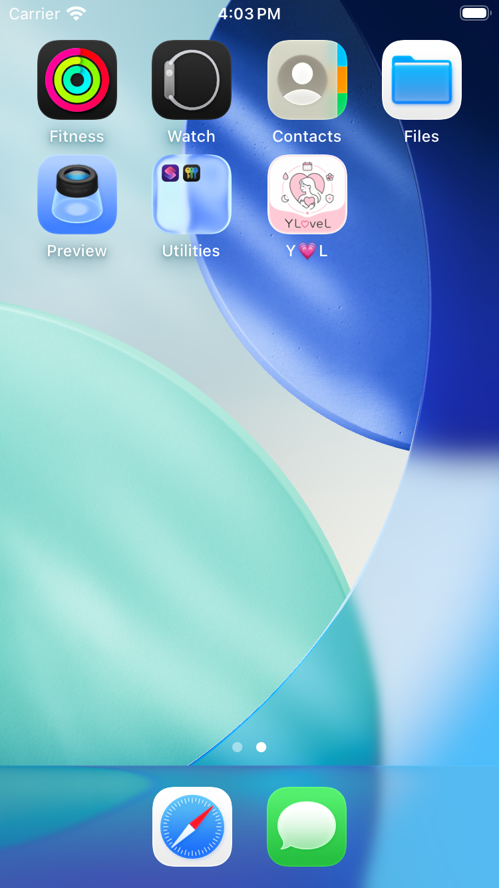
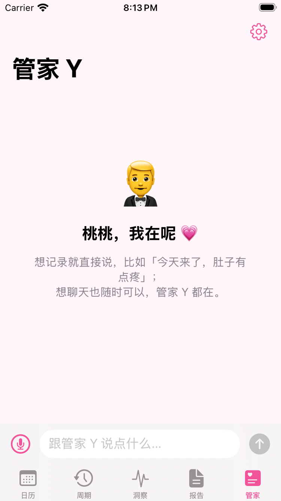

基于历史周期的统计预测 + 手腕温度相位校准，给出「预测区间」而非冷冰冰的单一日期，诚实不焦虑。
每次经期结束自动生成专属报告：流量分布、症状统计、健康趋势、规律性评分与管家 Y 的关怀寄语。
「今天来了，量少肚子疼」一句话完成记录；离线规则解析优先，配 AI 服务后理解更智能。
专属管家随时在线：记录、问候、抱抱、提醒。称呼你「桃桃」，语气亲昵温柔，就像家人在身边。
经期前 3 天，管家 Y 每天提醒你确认一项准备：卫生巾、暖宝宝、红糖、止痛药，都可自定义。
表盘一键记录经期、周期倒计时复杂功能；手腕温度（SE 3 / S8+）自动校准预测，旧款自动降级。
周期长度、症状频率趋势一目了然；痛经连续加重时，管家 Y 会温柔提醒你关注身体。
所有数据默认只保存在本机；App 锁 + 假密码防窥；语音识别可选端侧，健康信息不外传。



通过 CosyVoice 语音克隆技术，把主人的声音装进管家 Y 的身体里。
经期提醒、早安晚安、抱抱安慰——都是主人亲自说给你听。